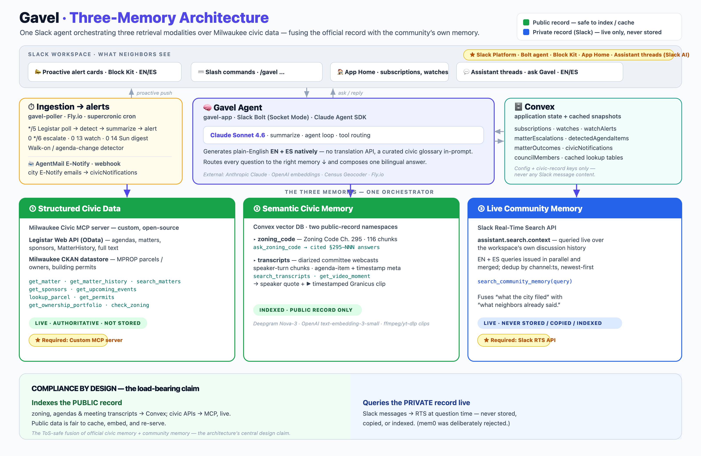

City Hall publishes everything.
Nobody reads it.
The vote happens.
You find out after.
I sit on Milwaukee's City Plan Commission.

This is the public record. Minutes: not available. Video: not available.
The city's own filing never called it a data center.
"computational research facility"
A seven-hour hearing later, the developer dropped it.
They won.
⚖︎ Gavel
so the next block doesn't have to fight in the dark
"computational research facility"
You can't fight a thing
nobody will call by its name.

They decoded it. They showed up.
They won.
Most blocks find out after.
Milwaukee runs on Legistar — so do 300 other cities.
The Milwaukee Civic MCP server is open source today.
⚖︎ Gavel
Find out before.